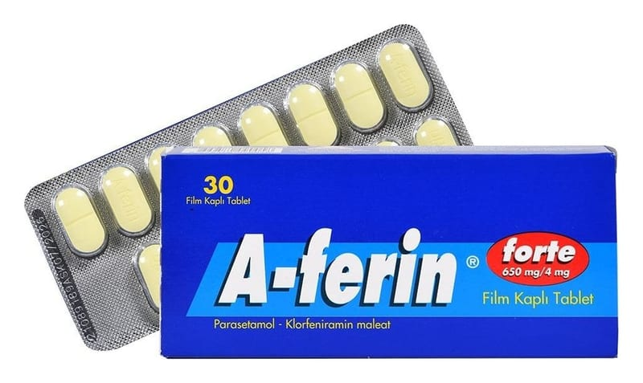

A-Ferin Forte 650 mg/4 mg Film Kaplı Tablet, 30 Adet

Ne için kullanılır
KT · Bölüm 1Her film kaplı tablet 650 mg parasetamol, 4 mg klorfeniramin maleat içerir.
A-FERİN FORTE öksürük ve soğuk algınlığı preparatları grubuna dahildir.
A-FERİN FORTE sarı film kaplı, oblong, bikonveks, çift kenarlı, bir yüzünde “A-ferin” yazı lı, diğer yüzü çentikli tablettir.
Grip ve soğuk algınlığına bağlı burun akıntısı, aksırma, burun ve boğazda kaşıntı, baş ağrısı, adale ağrısı, boğaz ağrısı, vücut kırıklığı, ateş, nezle, gözlerde sulanma ve kaşıntı gibi durumlarda kullanılır.